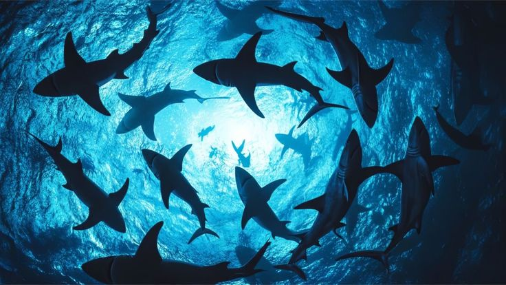
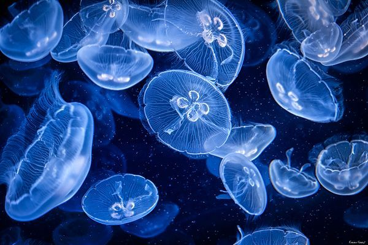
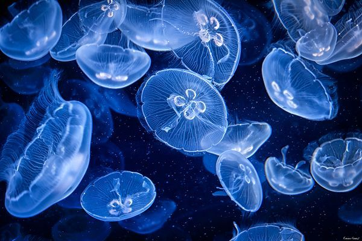

.png)
.png)
.png)
.png)
.png)
.png)
.png)

 

Selamat datang di web saya, Mercia Keals 94 absen 24! Melalui halaman ini, saya akan memperkenalkan SDGs ke-14 tentang Ekosistem Kelautan dan pentingnya menjaga kelestarian laut bagi kehidupan. Semoga informasi ini bermanfaat dan menambah kepedulian kita terhadap lingkungan!
SDGs ke-14 adalah “Life Below Water” atau Ekosistem Kelautan. Tujuannya adalah melindungi dan melestarikan lautan, pesisir, Serta semua kehidupan yang ada di dalamnya. Fokus utamanya mencakup mengurangi pencemaran laut, mencegah penangkapan ikan berlebihan, melindungi terumbu karang, dan memastikan pemanfaatan sumber daya laut dilakukan secara berkelanjutan.
Melalui website ini, saya berupaya memberikan informasi, ulasan, dan wawasan mengenai berbagai langkah konkret yang dilakukan Indonesia di tingkat internasional untuk mendukung dan mencapai Tujuan Pembangunan Berkelanjutan. Mari bersama melihat bagaimana Indonesia turut berperan dalam menghadirkan solusi bagi tantangan global demi masa depan yang lebih berkelanjutan.
Selamat membaca dan semoga bermanfaat!
SDGs ke-14 berfokus pada melestarikan dan memanfaatkan sumber daya laut secara berkelanjutan. Tujuannya adalah memastikan bahwa laut tetap sehat, bersih, dan mampu mendukung kehidupan manusia serta makhluk hidup di dalamnya.
“SDGs ke-14 (Life Below Water) bertujuan untuk melestarikan dan memanfaatkan sumber daya laut serta ekosistem kelautan secara berkelanjutan.”


Solusi untuk mencapai SDGs ke-14 adalah dengan mengurangi sampah plastik di laut, memperketat pengawasan terhadap penangkapan ikan ilegal, melindungi dan memulihkan ekosistem seperti terumbu karang dan mangrove, mengendalikan pencemaran dari limbah industri, menerapkan perikanan yang berkelanjutan, memperkuat riset serta teknologi kelautan, dan memberikan edukasi kepada masyarakat pesisir agar bersama-sama menjaga kelestarian laut.


Hallo semua! Perkenalkan saya Mercia dari kelas 94/24. Saya merupakan Siswi SMP Santa Ursula jakarta. Pada kesempatan yang telah diberikan Saya telah menjelaskan lebih lanjut mengenai SDGS ke-14. Projek website ini merupakan IL Kecil TIK-PPKN-IPS. Saya berharap website saya ini dapat membantu kalian semua lebih mengerti mengenai SDGS Ke-14 yaitu Ekosistem Kelautan.